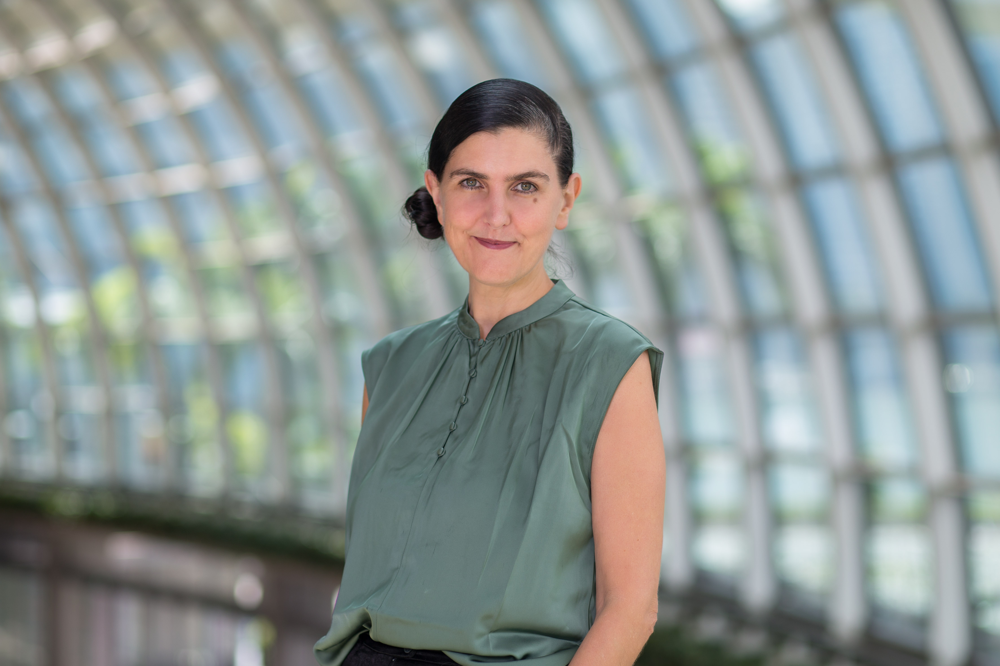
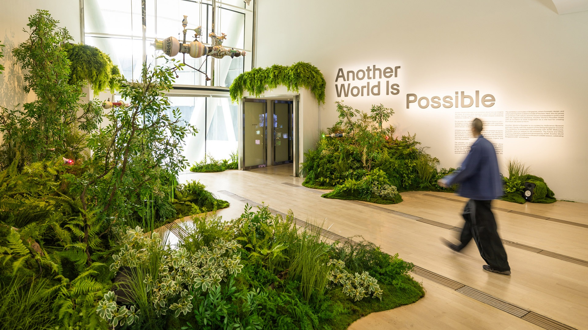
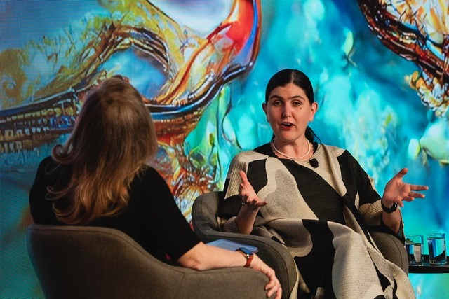

I have some news of a significant new chapter in my work and life, which I am happy to share.
After 12 wonderful years as director of ArtScience Museum, I have decided that this is the right moment to step down and begin a new chapter.
It is a decision I have been moving towards for some time, and I am making it from a position of pride in what we built together, and excitement about what comes next.
Leading ArtScience Museum has been the privilege of my professional life. Together with my incredible team, we have brought 75 major exhibitions and thousands of events to Singapore.
We have worked with artists, scientists, technologists, and thinkers who created some of the world's most compelling and intriguing work. We brought original masterpieces by Leonardo da Vinci to Southeast Asia for the first time. We made astronomy and particle physics accessible and compelling to hundreds of thousands of visitors. We opened teamLab's first ever permanent exhibition, and launched Southeast Asia's first VR Gallery. We have surprised and delighted many millions of visitors over the past decade. And we did this whilst working hard to make the world a better place. Through our collaborations with WWF, we planted 10,000 trees in Rimbang Baling, 20,000 mangrove trees across Southeast Asia, and we are about to plant 100 hectares of seagrass through our next exhibition, Into the Ocean.
I am leaving feeling immensely proud of what we have built ArtScience Museum into: an internationally recognised and locally cherished institution that celebrates the convergence of art, science, technology and culture. Having taken the museum to its 15th anniversary this year, this is the right moment to bow out, on a high. And I am excited to be starting something new and inspiring.

I am delighted to announce that I have founded Futures Imagined, a new studio and consultancy, working internationally at the intersection of art, science, and futures thinking. As Director and Chief Curator, I will be working on exhibitions, writing, and public events, as well as engaging in consultancy for organisations and individuals who want to think boldly about the future and harness the power of culture and imagination to help create it.
I am also going to be doing some advisory work with a Gulf-based firm working at the frontier of futures intelligence and geopolitical analysis. This is the kind of intellectually ambitious, internationally oriented work that energises me, so I am really happy about this direction. I will be making a further announcement about that soon.
Alongside this, I am extending my research practice through an international Master's degree in Museum Studies at the University of Leicester, which I am undertaking remotely.
Together, these new ventures will allow me to go deeper into the art, science, and technology work I love, and to pursue the futures thinking I introduced to the museum through exhibitions like 2219 and Another World is Possible, and initiatives like last year's Futures Festival. It's an opportunity to expand my horizons, and work with more focus and more freedom.

I am leaving ArtScience Museum in the hands of a truly remarkable team. My colleague Adrian George will continue to lead our curatorial and programmatic work, ably supported by a team of amazing people too numerous to name, all of whom I will miss dearly.
I am also stepping down from my role as Vice President of Attractions at Marina Bay Sands, and I am leaving the attractions in the safe hands of the wonderful Jason Teo.
I have often quoted the writer René Denfeld when I have spoken about why I believe in working on projects about the future. She once said:
"If you think about it, imagination is actually a radical act. Because if you have an imagination, you can imagine yourself in a different future."
My 12 years at ArtScience Museum has taught me how true that is. And now Futures Imagined is my way of making sure that remains at the heart of everything I do.
I will remain based in Singapore for the time being, but travelling, as needed, and talking through opportunities ahead.
I very much look forward to catching up with friends and colleagues over the next weeks and months.
Drop me a line and let's stay in touch.
Honor Harger